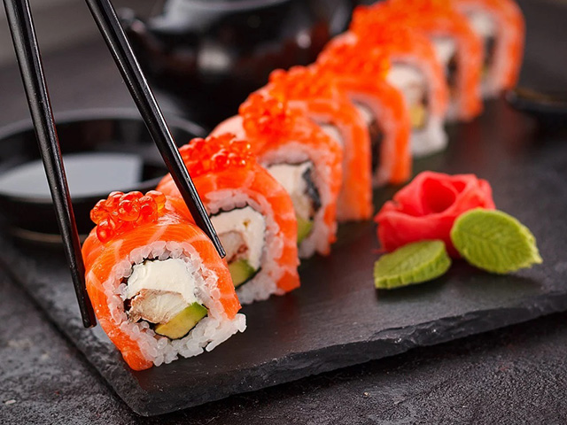

Our Menu
Chicken
Chicken makes a fantastic substitute for red meats. A great source of protein, the meat has been linked to a variety of health benefits.
The lean protein in chicken is an excellent source of amino acids. Our bodies use amino acids to build muscle tissue, something that is particularly important as we age. Studies have also shown that higher protein intake helps to maintain bone mineral density. Eating chicken can help to build stronger muscles and promote healthier bones, decreasing the risk of injuries and diseases such as osteoporosis.
Research suggests that 25-30 grams of protein per meal can help us feel more full. Protein rich meals can make us feel fuller despite us eating less, which helps to promote better weight management. Healthier weight leads to improvements in risk factors for heart problems such as high triglyceride levels and high blood pressure. A food rich in protein, chicken can help with weight management and reduce the risk of heart disease.
Chicken contains the amino acid tryptophan, which has been linked to higher levels of serotonin (the “feel good” hormone) in our brains. The tryptophan levels in chicken aren’t high enough to make you feel instantly euphoric, but studies show it could help to boost serotonin levels when paired with other factors.
Chicken is filled with high-quality proteins and doesn’t contain much fat — especially if you eat lean cuts. Beyond its rich protein content, chicken also contains: vitamin B12, tryptophan, choline, zinc, iron and copper.
Back to TopBeef
Beef is a good source of protein and other nutrients, but is also high in cholesterol and saturated fats that can cause fatty deposits to build up in the blood. Beef can be a healthy part of your diet, but should be eaten in moderation.
Even though eating beef does increase your health risks overall. However, there are some benefits to eating beef if you eat it in small portions and choose lean cuts.
Beef is an excellent source of iron. The iron in beef helps your body produce hemoglobin, a protein that helps your blood carry oxygen from your lungs to the rest of your body. Not consuming enough iron can put you at risk of iron deficiency anemia, meaning your body isn’t getting enough oxygen. You might feel tired, listless, weak, and mentally foggy. Eating beef can help prevent iron deficiency anemia in people who are at risk.
Beef is a good source of zinc, which the body needs to heal damaged tissue and support a healthy immune system. Children and adolescents also need healthy amounts of zinc to make sure they thrive and grow.
Protein is essential for muscle health. It rebuilds the muscle tissue that is naturally lost in the wear and tear of daily life. Protein also helps you build more muscle and is especially helpful if you’re working on strength training. A single serving of beef supplies the recommended daily amount of protein, helping to prevent loss of muscle mass.
Back to TopSushi
Sushi is known for having high amounts of concentrated forms of omega-3 fatty acids. These fatty acids act as a “good” form of cholesterol that helps to prevent clogged arteries. Omega-3 has also been linked to helping lower blood pressure. The types of sushi that are especially rich in omega-3 include lake trout, herring, tuna and salmon.
Many sushi rolls are wrapped in thin sheets of seaweed (nori). Seaweed contains a number of healthy minerals, the most prominent of which is iodine. This key mineral is an essential part of our diet and is especially important to the proper function of our thyroid glands.
Fish is high in protein and low in fat and calories. This combination is great for our metabolism. Low-calorie, high-quality proteins can significantly boost our body’s ability to function properly, create new cells and metabolize energy.
Additionally, fish is not the only component of sushi. Most sushi rolls are served with wasabi and ginger, which both have anti-carcinogenic properties because of their antioxidant compounds. These antioxidants are capable of neutralizing free radicals, eliminating their ability to mutate into cancer cells.
Moreover, both wasabi and ginger have anti-bacterial properties. This means that if there is any concern about freshness or unwanted bacteria, these two antiviral agents can potentially help to kill off bacteria, which, in effect, helps boost your immune system.
Back to Top